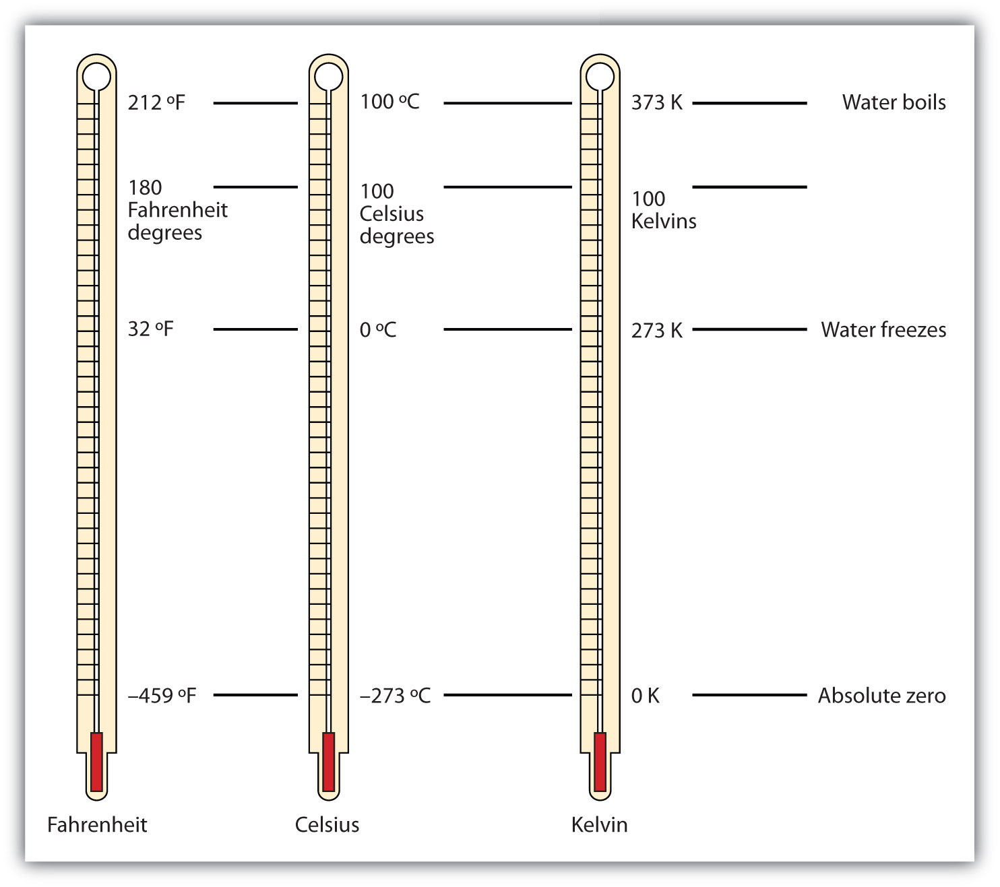

Data suggest that a male child will weigh 50% of his adult weight at about 11 years of age. However, he will reach 50% of his adult height at only 2 years of age. It is obvious, then, that people eventually stop growing up but continue to grow out. Data also suggest that the average human height has been increasing over time. In industrialized countries, the average height of people increased 5.5 inches from 1810 to 1984. Most scientists attribute this simple, basic measurement of the human body to better health and nutrition.
Source: Chart courtesy of Centers for Disease Control and Prevention, http://www.cdc.gov/nchs/nhanes.htm#Set%201.
In 1983, an Air Canada airplane had to make an emergency landing because it unexpectedly ran out of fuel; ground personnel had filled the fuel tanks with a certain number of pounds of fuel, not kilograms of fuel. In 1999, the Mars Climate Orbiter spacecraft was lost attempting to orbit Mars because the thrusters were programmed in terms of English units, even though the engineers built the spacecraft using metric units. In 1993, a nurse mistakenly administered 23 units of morphine to a patient rather than the “2–3” units prescribed. (The patient ultimately survived.) These incidents occurred because people weren’t paying attention to quantities.
Chemistry, like all sciences, is quantitative. It deals with quantities, things that have amounts and units. Dealing with quantities is very important in chemistry, as is relating quantities to each other. In this chapter, we will discuss how we deal with numbers and units, including how they are combined and manipulated.
Quantities have two parts: the number and the unit. The number tells “how many.” It is important to be able to express numbers properly so that the quantities can be communicated properly.
Standard notationA straightforward expression of a number. is the straightforward expression of a number. Numbers such as 17, 101.5, and 0.00446 are expressed in standard notation. For relatively small numbers, standard notation is fine. However, for very large numbers, such as 306,000,000, or for very small numbers, such as 0.000000419, standard notation can be cumbersome because of the number of zeros needed to place nonzero numbers in the proper position.
Scientific notationAn expression of a number using powers of 10. is an expression of a number using powers of 10. Powers of 10 are used to express numbers that have many zeros:
| 100 | = 1 |
| 101 | = 10 |
| 102 | = 100 = 10 × 10 |
| 103 | = 1,000 = 10 × 10 × 10 |
| 104 | = 10,000 = 10 × 10 × 10 × 10 |
and so forth. The raised number to the right of the 10 indicating the number of factors of 10 in the original number is the exponentThe raised number to the right of a 10 indicating the number of factors of 10 in the original number.. (Scientific notation is sometimes called exponential notation.) The exponent’s value is equal to the number of zeros in the number expressed in standard notation.
Small numbers can also be expressed in scientific notation but with negative exponents:
| 10−1 | = 0.1 = 1/10 |
| 10−2 | = 0.01 = 1/100 |
| 10−3 | = 0.001 = 1/1,000 |
| 10−4 | = 0.0001 = 1/10,000 |
and so forth. Again, the value of the exponent is equal to the number of zeros in the denominator of the associated fraction. A negative exponent implies a decimal number less than one.
A number is expressed in scientific notation by writing the first nonzero digit, then a decimal point, and then the rest of the digits. The part of a number in scientific notation that is multiplied by a power of 10 is called the coefficientThe part of a number in scientific notation that is multiplied by a power of 10.. Then determine the power of 10 needed to make that number into the original number and multiply the written number by the proper power of 10. For example, to write 79,345 in scientific notation,
79,345 = 7.9345 × 10,000 = 7.9345 × 104Thus, the number in scientific notation is 7.9345 × 104. For small numbers, the same process is used, but the exponent for the power of 10 is negative:
0.000411 = 4.11 × 1/10,000 = 4.11 × 10−4Typically, the extra zero digits at the end or the beginning of a number are not included. (See Figure 2.1 "Using Scientific Notation".)
Express these numbers in scientific notation.
Solution
Test Yourself
Express these numbers in scientific notation.
Answers
Another way to determine the power of 10 in scientific notation is to count the number of places you need to move the decimal point to get a numerical value between 1 and 10. The number of places equals the power of 10. This number is positive if you move the decimal point to the right and negative if you move the decimal point to the left:
Many quantities in chemistry are expressed in scientific notation. When performing calculations, you may have to enter a number in scientific notation into a calculator. Be sure you know how to correctly enter a number in scientific notation into your calculator. Different models of calculators require different actions for properly entering scientific notation. If in doubt, consult your instructor immediately. (See Figure 2.2 "Scientific Notation on a Calculator".)
Express these numbers in scientific notation.
Express these numbers in scientific notation.
Express these numbers in scientific notation.
Express these numbers in scientific notation.
Express these numbers in standard notation.
Express these numbers in standard notation.
Express these numbers in standard notation.
Express these numbers in standard notation.
These numbers are not written in proper scientific notation. Rewrite them so that they are in proper scientific notation.
These numbers are not written in proper scientific notation. Rewrite them so that they are in proper scientific notation.
These numbers are not written in proper scientific notation. Rewrite them so that they are in proper scientific notation.
These numbers are not written in proper scientific notation. Rewrite them so that they are in proper scientific notation.
Write these numbers in scientific notation by counting the number of places the decimal point is moved.
Write these numbers in scientific notation by counting the number of places the decimal point is moved.
Use your calculator to evaluate these expressions. Express the final answer in proper scientific notation.
Use your calculator to evaluate these expressions. Express the final answer in proper scientific notation.
Use your calculator to evaluate these expressions. Express the final answer in proper scientific notation.
Use your calculator to evaluate these expressions. Express the final answer in proper scientific notation.
A number indicates “how much,” but the unit indicates “of what.” The “of what” is important when communicating a quantity. For example, if you were to ask a friend how close you are to Lake Erie and your friend says “six,” then your friend isn’t giving you complete information. Six what? Six miles? Six inches? Six city blocks? The actual distance to the lake depends on what units you use.
Chemistry, like most sciences, uses the International System of Units, or SI for short. (The letters SI stand for the French “le Système International d’unités.”) SI specifies certain units for various types of quantities, based on seven fundamental unitsOne of the seven basic units of SI used in science. for various quantities. We will use most of the fundamental units in chemistry. Initially, we will deal with three fundamental units. The meter (m) is the SI unit of length. It is a little longer than a yard (see Figure 2.3 "The Meter"). The SI unit of mass is the kilogram (kg), which is about 2.2 pounds (lb). The SI unit of time is the second (s).
Figure 2.3 The Meter
The SI standard unit of length, the meter, is a little longer than a yard.
To express a quantity, you need to combine a number with a unit. If you have a length that is 2.4 m, then you express that length as simply 2.4 m. A time of 15,000 s can be expressed as 1.5 × 104 s in scientific notation.
Sometimes, a given unit is not an appropriate size to easily express a quantity. For example, the width of a human hair is very small, and it doesn’t make much sense to express it in meters. SI also defines a series of numerical prefixesA prefix used with a unit that refers to a multiple or fraction of a fundamental unit to make a more conveniently sized unit for a specific quantity. that refer to multiples or fractions of a fundamental unit to make a unit more conveniently sized for a specific quantity. Table 2.1 "Multiplicative Prefixes for SI Units" lists the prefixes, their abbreviations, and their multiplicative factors. Some of the prefixes, such as kilo-, mega-, and giga-, represent more than one of the fundamental unit, while other prefixes, such as centi-, milli-, and micro-, represent fractions of the original unit. Note, too, that once again we are using powers of 10. Each prefix is a multiple of or fraction of a power of 10.
Table 2.1 Multiplicative Prefixes for SI Units
| Prefix | Abbreviation | Multiplicative Amount |
|---|---|---|
| giga- | G | 1,000,000,000 × |
| mega- | M | 1,000,000 × |
| kilo- | k | 1,000 × |
| deci- | d | 1/10 × |
| centi- | c | 1/100 × |
| milli- | m | 1/1,000 × |
| micro- | μ* | 1/1,000,000 × |
| nano- | n | 1/1,000,000,000 × |
| pico- | p | 1/1,000,000,000,000 × |
| * The letter μ is the Greek letter lowercase equivalent to an m and is called “mu” (pronounced “myoo”). | ||
To use the fractions to generate new units, simply combine the prefix with the unit itself; the abbreviation for the new unit is the combination of the abbreviation for the prefix and the abbreviation of the unit. For example, the kilometer (km) is 1,000 × meter, or 1,000 m. Thus, 5 kilometers (5 km) is equal to 5,000 m. Similarly, a millisecond (ms) is 1/1,000 × second, or one-thousandth of a second. Thus, 25 ms is 25 thousandths of a second. You will need to become proficient in combining prefixes and units. (You may recognize that one of our fundamental units, the kilogram, automatically has a prefix-unit combination, the kilogram. The word kilogram means 1,000 g.)
In addition to the fundamental units, SI also allows for derived unitsA unit that is a product or a quotient of a fundamental unit. based on a fundamental unit or units. There are many derived units used in science. For example, the derived unit for area comes from the idea that area is defined as width times height. Because both width and height are lengths, they both have the fundamental unit of meter, so the unit of area is meter × meter, or meter2 (m2). This is sometimes spoken as “square meters.” A unit with a prefix can also be used to derive a unit for area, so we can also have cm2, mm2, or km2 as acceptable units for area.
Volume is defined as length times width times height, so it has units of meter × meter × meter or meter3 (m3), sometimes spoken as “cubic meters.” The cubic meter is a rather large unit, however, so another unit is defined that is somewhat more manageable: the liter (L). A liter is 1/1,000th of a cubic meter and is a little more than 1 quart in volume (see Figure 2.4 "The Liter"). Prefixes can also be used with the liter unit, so we can speak of milliliters (1/1,000th of a liter; mL) and kiloliters (1,000 L; kL).
Figure 2.4 The Liter

The SI unit of volume, the liter, is slightly larger than 1 quart.
Another definition of a liter is one-tenth of a meter cubed. Because one-tenth of a meter is 10 cm, then a liter is equal to 1,000 cm3 (Figure 2.5 "The Size of 1 Liter"). Because 1 L equals 1,000 mL, we conclude that 1 mL equals 1 cm3; thus, these units are interchangeable.
Figure 2.5 The Size of 1 Liter
One liter equals 1,000 cm3, so 1 cm3 is the same as 1 mL.
Units not only are multiplied together but also can be divided. For example, if you are traveling at one meter for every second of time elapsed, your velocity is 1 meter per second, or 1 m/s. The word per implies division, so velocity is determined by dividing a distance quantity by a time quantity. Other units for velocity include kilometers per hour (km/h) or even micrometers per nanosecond (μm/ns). Later, we will see other derived units that can be expressed as fractions.
Solution
Test Yourself
Answers
Identify the unit in each quantity.
Identify the unit in each quantity.
Identify the unit in each quantity.
Identify the unit in each quantity.
Indicate what multiplier each prefix represents.
Indicate what multiplier each prefix represents.
Give the prefix that represents each multiplier.
Give the prefix that represents each multiplier.
Complete the following table with the missing information.
| Unit | Abbreviation |
|---|---|
| kilosecond | |
| mL | |
| Mg | |
| centimeter |
Complete the following table with the missing information.
| Unit | Abbreviation |
|---|---|
| kilometer per second | |
| second | |
| cm3 | |
| μL | |
| nanosecond |
Express each quantity in a more appropriate unit. There may be more than one acceptable answer.
Express each quantity in a more appropriate unit. There may be more than one acceptable answer.
Express each quantity in a more appropriate unit. There may be more than one acceptable answer.
Express each quantity in a more appropriate unit. There may be more than one acceptable answer.
Multiplicative prefixes are used for other units as well, such as computer memory. The basic unit of computer memory is the byte (b). What is the unit for one million bytes?
You may have heard the terms microscale or nanoscale to represent the sizes of small objects. What units of length do you think are useful at these scales? What fractions of the fundamental unit of length are these units?
Acceleration is defined as a change in velocity per time. Propose a unit for acceleration in terms of the fundamental SI units.
Density is defined as the mass of an object divided by its volume. Propose a unit of density in terms of the fundamental SI units.
| Unit | Abbreviation |
|---|---|
| kilosecond | ks |
| milliliter | mL |
| megagram | Mg |
| centimeter | cm |
megabytes (Mb)
meters/second2
If you use a calculator to evaluate the expression 337/217, you will get the following:
and so on for many more digits. Although this answer is correct, it is somewhat presumptuous. You start with two values that each have three digits, and the answer has twelve digits? That does not make much sense from a strict numerical point of view.
Consider using a ruler to measure the width of an object, as shown in Figure 2.6 "Expressing Width". The object is definitely more than 1 cm long, so we know that the first digit in our measurement is 1. We see by counting the tick marks on the ruler that the object is at least three ticks after the 1. If each tick represents 0.1 cm, then we know the object is at least 1.3 cm wide. But our ruler does not have any more ticks between the 0.3 and the 0.4 marks, so we can’t know exactly how much the next decimal place is. But with a practiced eye we can estimate it. Let us estimate it as about six-tenths of the way between the third and fourth tick marks, which estimates our hundredths place as 6, so we identify a measurement of 1.36 cm for the width of the object.
Figure 2.6 Expressing Width
What is the proper way to express the width of this object?
Does it make any sense to try to report a thousandths place for the measurement? No, it doesn’t; we are not exactly sure of the hundredths place (after all, it was an estimate only), so it would be fruitless to estimate a thousandths place. Our best measurement, then, stops at the hundredths place, and we report 1.36 cm as proper measurement.
This concept of reporting the proper number of digits in a measurement or a calculation is called significant figuresThe limit of the number of places a measurement can be properly expressed with.. Significant figures (sometimes called significant digits) represent the limits of what values of a measurement or a calculation we are sure of. The convention for a measurement is that the quantity reported should be all known values and the first estimated value. The conventions for calculations are discussed as follows.
Use each diagram to report a measurement to the proper number of significant figures.
Solution
Test Yourself
What would be the reported width of this rectangle?

Answer
0.63 cm
In many cases, you will be given a measurement. How can you tell by looking what digits are significant? For example, the reported population of the United States is 306,000,000. Does that mean that it is exactly three hundred six million or is some estimation occurring?
The following conventions dictate which numbers in a reported measurement are significant and which are not significant:
So, by these rules, the population figure of the United States has only three significant figures: the 3, the 6, and the zero between them. The remaining six zeros simply put the 306 in the millions position. (See Figure 2.7 "Significant Figures" for another example.)
Give the number of significant figures in each measurement.
Solution
Test Yourself
Give the number of significant figures in each measurement.
Answers
How are significant figures handled in calculations? It depends on what type of calculation is being performed. If the calculation is an addition or a subtraction, the rule is as follows: limit the reported answer to the rightmost column that all numbers have significant figures in common. For example, if you were to add 1.2 and 4.71, we note that the first number stops its significant figures in the tenths column, while the second number stops its significant figures in the hundredths column. We therefore limit our answer to the tenths column.
We drop the last digit—the 1—because it is not significant to the final answer.
The dropping of positions in sums and differences brings up the topic of rounding. Although there are several conventions, in this text we will adopt the following rule: the final answer should be rounded up if the first dropped digit is 5 or greater and rounded down if the first dropped digit is less than 5.
Express the final answer to the proper number of significant figures.
Solution
Test Yourself
Express the answer for 3.445 + 90.83 − 72.4 to the proper number of significant figures.
Answer
21.9
If the operations being performed are multiplication or division, the rule is as follows: limit the answer to the number of significant figures that the data value with the least number of significant figures has. So if we are dividing 23 by 448, which have two and three significant figures each, we should limit the final reported answer to two significant figures (the lesser of two and three significant figures):
The same rounding rules apply in multiplication and division as they do in addition and subtraction.
Express the final answer to the proper number of significant figures.
Solution
Test Yourself
Express the final answer to the proper number of significant figures.
Answers
As you have probably realized by now, the biggest issue in determining the number of significant figures in a value is the zero. Is the zero significant or not? One way to unambiguously determine whether a zero is significant or not is to write a number in scientific notation. Scientific notation will include zeros in the coefficient of the number only if they are significant. Thus, the number 8.666 × 106 has four significant figures. However, the number 8.6660 × 106 has five significant figures. That last zero is significant; if it were not, it would not be written in the coefficient. So when in doubt about expressing the number of significant figures in a quantity, use scientific notation and include the number of zeros that are truly significant.
Express each measurement to the correct number of significant figures.

Express each measurement to the correct number of significant figures.
How many significant figures do these numbers have?
How many significant figures do these numbers have?
How many significant figures do these numbers have?
How many significant figures do these numbers have?
Compute and express each answer with the proper number of significant figures, rounding as necessary.
Compute and express each answer with the proper number of significant figures, rounding as necessary.
Compute and express each answer with the proper number of significant figures, rounding as necessary.
Compute and express each answer with the proper number of significant figures, rounding as necessary.
Perform each calculation and limit each answer to three significant figures.
Perform each calculation and limit each answer to four significant figures.
In Section 2.2 "Expressing Units", we showed some examples of how to replace initial units with other units of the same type to get a numerical value that is easier to comprehend. In this section, we will formalize the process.
Consider a simple example: how many feet are there in 4 yards? Most people will almost automatically answer that there are 12 feet in 4 yards. How did you make this determination? Well, if there are 3 feet in 1 yard and there are 4 yards, then there are 4 × 3 = 12 feet in 4 yards.
This is correct, of course, but it is informal. Let us formalize it in a way that can be applied more generally. We know that 1 yard (yd) equals 3 feet (ft):
1 yd = 3 ftIn math, this expression is called an equality. The rules of algebra say that you can change (i.e., multiply or divide or add or subtract) the equality (as long as you don’t divide by zero) and the new expression will still be an equality. For example, if we divide both sides by 2, we get
We see that one-half of a yard equals 3/2, or one and a half, feet—something we also know to be true, so the above equation is still an equality. Going back to the original equality, suppose we divide both sides of the equation by 1 yard (number and unit):
The expression is still an equality, by the rules of algebra. The left fraction equals 1. It has the same quantity in the numerator and the denominator, so it must equal 1. The quantities in the numerator and denominator cancel, both the number and the unit:
When everything cancels in a fraction, the fraction reduces to 1:
We have an expression, , that equals 1. This is a strange way to write 1, but it makes sense: 3 ft equal 1 yd, so the quantities in the numerator and denominator are the same quantity, just expressed with different units. The expression is called a conversion factorA fraction that can be used to convert a quantity from one unit to another., and it is used to formally change the unit of a quantity into another unit. (The process of converting units in such a formal fashion is sometimes called dimensional analysis or the factor label method.)
To see how this happens, let us start with the original quantity:
4 ydNow let us multiply this quantity by 1. When you multiply anything by 1, you don’t change the value of the quantity. Rather than multiplying by just 1, let us write 1 as :
The 4 yd term can be thought of as ; that is, it can be thought of as a fraction with 1 in the denominator. We are essentially multiplying fractions. If the same thing appears in the numerator and denominator of a fraction, they cancel. In this case, what cancels is the unit yard:
That is all that we can cancel. Now, multiply and divide all the numbers to get the final answer:
Again, we get an answer of 12 ft, just as we did originally. But in this case, we used a more formal procedure that is applicable to a variety of problems.
How many millimeters are in 14.66 m? To answer this, we need to construct a conversion factor between millimeters and meters and apply it correctly to the original quantity. We start with the definition of a millimeter, which is
1 mm = 1/1,000 mThe 1/1,000 is what the prefix milli- means. Most people are more comfortable working without fractions, so we will rewrite this equation by bringing the 1,000 into the numerator of the other side of the equation:
1,000 mm = 1 mNow we construct a conversion factor by dividing one quantity into both sides. But now a question arises: which quantity do we divide by? It turns out that we have two choices, and the two choices will give us different conversion factors, both of which equal 1:
Which conversion factor do we use? The answer is based on what unit you want to get rid of in your initial quantity. The original unit of our quantity is meters, which we want to convert to millimeters. Because the original unit is assumed to be in the numerator, to get rid of it, we want the meter unit in the denominator; then they will cancel. Therefore, we will use the second conversion factor. Canceling units and performing the mathematics, we get
Note how m cancels, leaving mm, which is the unit of interest.
The ability to construct and apply proper conversion factors is a very powerful mathematical technique in chemistry. You need to master this technique if you are going to be successful in this and future courses.
Solution
We will use the fact that 1 kL = 1,000 L. Of the two conversion factors that can be defined, the one that will work is . Applying this conversion factor, we get
We will use the fact that 1 nm = 1/1,000,000,000 m, which we will rewrite as 1,000,000,000 nm = 1 m, or 109 nm = 1 m. Of the two possible conversion factors, the appropriate one has the nm unit in the denominator: . Applying this conversion factor, we get
In the final step, we expressed the answer in scientific notation.
Test Yourself
Answers
What if we have a derived unit that is the product of more than one unit, such as m2? Suppose we want to convert square meters to square centimeters? The key is to remember that m2 means m × m, which means we have two meter units in our derived unit. That means we have to include two conversion factors, one for each unit. For example, to convert 17.6 m2 to square centimeters, we perform the conversion as follows:
How many cubic centimeters are in 0.883 m3?
Solution
With an exponent of 3, we have three length units, so by extension we need to use three conversion factors between meters and centimeters. Thus, we have
You should demonstrate to yourself that the three meter units do indeed cancel.
Test Yourself
How many cubic millimeters are present in 0.0923 m3?
Answer
9.23 × 107 mm3
Suppose the unit you want to convert is in the denominator of a derived unit; what then? Then, in the conversion factor, the unit you want to remove must be in the numerator. This will cancel with the original unit in the denominator and introduce a new unit in the denominator. The following example illustrates this situation.
Convert 88.4 m/min to meters/second.
Solution
We want to change the unit in the denominator from minutes to seconds. Because there are 60 seconds in 1 minute (60 s = 1 min), we construct a conversion factor so that the unit we want to remove, minutes, is in the numerator: . Apply and perform the math:
Notice how the 88.4 automatically goes in the numerator. That’s because any number can be thought of as being in the numerator of a fraction divided by 1.
Test Yourself
Convert 0.203 m/min to meters/second.
Answer
0.00338 m/s or 3.38 × 10−3 m/s
Sometimes there will be a need to convert from one unit with one numerical prefix to another unit with a different numerical prefix. How do we handle those conversions? Well, you could memorize the conversion factors that interrelate all numerical prefixes. Or you can go the easier route: first convert the quantity to the base unit, the unit with no numerical prefix, using the definition of the original prefix. Then convert the quantity in the base unit to the desired unit using the definition of the second prefix. You can do the conversion in two separate steps or as one long algebraic step. For example, to convert 2.77 kg to milligrams:
Alternatively, it can be done in a single multistep process:
You get the same answer either way.
How many nanoseconds are in 368.09 μs?
Solution
You can either do this as a one-step conversion from microseconds to nanoseconds or convert to the base unit first and then to the final desired unit. We will use the second method here, showing the two steps in a single line. Using the definitions of the prefixes micro- and nano-,
Test Yourself
How many milliliters are in 607.8 kL?
Answer
6.078 × 108 mL
When considering the significant figures of a final numerical answer in a conversion, there is one important case where a number does not impact the number of significant figures in a final answer—the so-called exact numberA number from a defined relationship that technically has an infinite number of significant figures.. An exact number is a number from a defined relationship, not a measured one. For example, the prefix kilo- means 1,000—exactly 1,000, no more or no less. Thus, in constructing the conversion factor
neither the 1,000 nor the 1 enter into our consideration of significant figures. The numbers in the numerator and denominator are defined exactly by what the prefix kilo- means. Another way of thinking about it is that these numbers can be thought of as having an infinite number of significant figures, such as
The other numbers in the calculation will determine the number of significant figures in the final answer.
A rectangular plot in a garden has the dimensions 36.7 cm by 128.8 cm. What is the area of the garden plot in square meters? Express your answer in the proper number of significant figures.
Solution
Area is defined as the product of the two dimensions, which we then have to convert to square meters and express our final answer to the correct number of significant figures, which in this case will be three.
The 1 and 100 in the conversion factors do not affect the determination of significant figures because they are exact numbers, defined by the centi- prefix.
Test Yourself
What is the volume of a block in cubic meters whose dimensions are 2.1 cm × 34.0 cm × 118 cm?
Answer
0.0084 m3
On July 23, 1983, an Air Canada Boeing 767 jet had to glide to an emergency landing at Gimli Industrial Park Airport in Gimli, Manitoba, because it unexpectedly ran out of fuel during flight. There was no loss of life in the course of the emergency landing, only some minor injuries associated in part with the evacuation of the craft after landing. For the remainder of its operational life (the plane was retired in 2008), the aircraft was nicknamed “the Gimli Glider.”

The Gimli Glider is the Boeing 767 that ran out of fuel and glided to safety at Gimli Airport. The aircraft ran out of fuel because of confusion over the units used to express the amount of fuel.
Source: Photo courtesy of Will F., http://commons.wikimedia.org/wiki/File:Gimli_Glider_today.jpg.
The 767 took off from Montreal on its way to Ottawa, ultimately heading for Edmonton, Canada. About halfway through the flight, all the engines on the plane began to shut down because of a lack of fuel. When the final engine cut off, all electricity (which was generated by the engines) was lost; the plane became, essentially, a powerless glider. Captain Robert Pearson was an experienced glider pilot, although he had never flown a glider the size of a 767. First Officer Maurice Quintal quickly determined that the aircraft would not be able make it to Winnipeg, the next large airport. He suggested his old Royal Air Force base at Gimli Station, one of whose runways was still being used as a community airport. Between the efforts of the pilots and the flight crew, they managed to get the airplane safely on the ground (although with buckled landing gear) and all passengers off safely.
What happened? At the time, Canada was transitioning from the older English system to the metric system. The Boeing 767s were the first aircraft whose gauges were calibrated in the metric system of units (liters and kilograms) rather than the English system of units (gallons and pounds). Thus, when the fuel gauge read 22,300, the gauge meant kilograms, but the ground crew mistakenly fueled the plane with 22,300 pounds of fuel. This ended up being just less than half of the fuel needed to make the trip, causing the engines to quit about halfway to Ottawa. Quick thinking and extraordinary skill saved the lives of 61 passengers and 8 crew members—an incident that would not have occurred if people were watching their units.
Write the two conversion factors that exist between the two given units.
Write the two conversion factors that exist between the two given units.
Perform the following conversions.
Perform the following conversions.
Perform the following conversions.
Perform the following conversions.
Perform the following conversions.
Perform the following conversions.
Why would it be inappropriate to convert square centimeters to cubic meters?
Why would it be inappropriate to convert from cubic meters to cubic seconds?
Perform the following conversions.
Perform the following conversions.
Perform the following conversions.
Perform the following conversions.
Perform the following conversions.
Perform the following conversions.
Perform the following conversions. Note that you will have to convert units in both the numerator and the denominator.
Perform the following conversions. Note that you will have to convert units in both the numerator and the denominator.
What is the area in square millimeters of a rectangle whose sides are 2.44 cm × 6.077 cm? Express the answer to the proper number of significant figures.
What is the volume in cubic centimeters of a cube with sides of 0.774 m? Express the answer to the proper number of significant figures.
The formula for the area of a triangle is 1/2 × base × height. What is the area of a triangle in square centimeters if its base is 1.007 m and its height is 0.665 m? Express the answer to the proper number of significant figures.
The formula for the area of a triangle is 1/2 × base × height. What is the area of a triangle in square meters if its base is 166 mm and its height is 930.0 mm? Express the answer to the proper number of significant figures.
One is a unit of area, and the other is a unit of volume.
1.48 × 103 mm2
3.35 × 103 cm2
There are other units in chemistry that are important, and we will cover others in the course of the entire book. One of the fundamental quantities in science is temperature. TemperatureA measure of the average amount of kinetic energy a system contains. is a measure of the average amount of energy of motion, or kinetic energy, a system contains. Temperatures are expressed using scales that use units called degreesThe unit of temperature scales., and there are several temperature scales in use. In the United States, the commonly used temperature scale is the Fahrenheit scale (symbolized by °F and spoken as “degrees Fahrenheit”). On this scale, the freezing point of liquid water (the temperature at which liquid water turns to solid ice) is 32°F, and the boiling point of water (the temperature at which liquid water turns to steam) is 212°F.
Science also uses other scales to express temperature. The Celsius scale (symbolized by °C and spoken as “degrees Celsius”) is a temperature scale where 0°C is the freezing point of water and 100°C is the boiling point of water; the scale is divided into 100 divisions between these two landmarks and extended higher and lower. By comparing the Fahrenheit and Celsius scales, a conversion between the two scales can be determined:
Using these formulas, we can convert from one temperature scale to another. The number 32 in the formulas is exact and does not count in significant figure determination.
Solution
Using the first formula from above, we have
Using the second formula from above, we have
Test Yourself
Answers
The fundamental unit of temperature (another fundamental unit of science, bringing us to four) in SI is the kelvinThe fundamental unit of temperature in SI. (K). The Kelvin temperature scale (note that the name of the scale capitalizes the word Kelvin, but the unit itself is lowercase) uses degrees that are the same size as the Celsius degree, but the numerical scale is shifted up by 273.15 units. That is, the conversion between the Kelvin and Celsius scales is as follows:
K = °C + 273.15 °C = K − 273.15For most purposes, it is acceptable to use 273 instead of 273.15. Note that the Kelvin scale does not use the word degrees; a temperature of 295 K is spoken of as “two hundred ninety-five kelvins” and not “two hundred ninety-five degrees Kelvin.”
The reason that the Kelvin scale is defined this way is because there exists a minimum possible temperature called absolute zeroThe minimum possible temperature, labeled 0 K (zero kelvins).. The Kelvin temperature scale is set so that 0 K is absolute zero, and temperature is counted upward from there. Normal room temperature is about 295 K, as seen in the following example.
If normal room temperature is 72.0°F, what is room temperature in degrees Celsius and kelvins?
Solution
First, we use the formula to determine the temperature in degrees Celsius:
Then we use the appropriate formula above to determine the temperature in the Kelvin scale:
K = 22.2°C + 273.15 = 295.4 KSo, room temperature is about 295 K.
Test Yourself
What is 98.6°F on the Kelvin scale?
Answer
310.2 K
Figure 2.9 "Fahrenheit, Celsius, and Kelvin Temperatures" compares the three temperature scales. Note that science uses the Celsius and Kelvin scales almost exclusively; virtually no practicing chemist expresses laboratory-measured temperatures with the Fahrenheit scale. (In fact, the United States is one of the few countries in the world that still uses the Fahrenheit scale on a daily basis. The other two countries are Liberia and Myanmar [formerly Burma]. People driving near the borders of Canada or Mexico may pick up local radio stations on the other side of the border that express the daily weather in degrees Celsius, so don’t get confused by their weather reports.)
Figure 2.9 Fahrenheit, Celsius, and Kelvin Temperatures
A comparison of the three temperature scales.
DensityA physical property defined as a substance’s mass divided by its volume. is a physical property that is defined as a substance’s mass divided by its volume:
Density is usually a measured property of a substance, so its numerical value affects the significant figures in a calculation. Notice that density is defined in terms of two dissimilar units, mass and volume. That means that density overall has derived units, just like velocity. Common units for density include g/mL, g/cm3, g/L, kg/L, and even kg/m3. Densities for some common substances are listed in Table 2.2 "Densities of Some Common Substances".
Table 2.2 Densities of Some Common Substances
| Substance | Density (g/mL or g/cm3) |
|---|---|
| water | 1.0 |
| gold | 19.3 |
| mercury | 13.6 |
| air | 0.0012 |
| cork | 0.22–0.26 |
| aluminum | 2.7 |
| iron | 7.87 |
Because of how it is defined, density can act as a conversion factor for switching between units of mass and volume. For example, suppose you have a sample of aluminum that has a volume of 7.88 cm3. How can you determine what mass of aluminum you have without measuring it? You can use the volume to calculate it. If you multiply the given volume by the known density (from Table 2.2 "Densities of Some Common Substances"), the volume units will cancel and leave you with mass units, telling you the mass of the sample:
where we have limited our answer to two significant figures.
What is the mass of 44.6 mL of mercury?
Solution
Use the density from Table 2.2 "Densities of Some Common Substances" as a conversion factor to go from volume to mass:
The mass of the mercury is 607 g.
Test Yourself
What is the mass of 25.0 cm3 of iron?
Answer
197 g
Density can also be used as a conversion factor to convert mass to volume—but care must be taken. We have already demonstrated that the number that goes with density normally goes in the numerator when density is written as a fraction. Take the density of gold, for example:
Although this was not previously pointed out, it can be assumed that there is a 1 in the denominator:
That is, the density value tells us that we have 19.3 grams for every 1 milliliter of volume, and the 1 is an exact number. When we want to use density to convert from mass to volume, the numerator and denominator of density need to be switched—that is, we must take the reciprocal of the density. In so doing, we move not only the units but also the numbers:
This reciprocal density is still a useful conversion factor, but now the mass unit will cancel and the volume unit will be introduced. Thus, if we want to know the volume of 45.9 g of gold, we would set up the conversion as follows:
Note how the mass units cancel, leaving the volume unit, which is what we’re looking for.
A cork stopper from a bottle of wine has a mass of 3.78 g. If the density of cork is 0.22 g/cm3, what is the volume of the cork?
Solution
To use density as a conversion factor, we need to take the reciprocal so that the mass unit of density is in the denominator. Taking the reciprocal, we find
We can use this expression as the conversion factor. So
Test Yourself
What is the volume of 3.78 g of gold?
Answer
0.196 cm3
Care must be used with density as a conversion factor. Make sure the mass units are the same, or the volume units are the same, before using density to convert to a different unit. Often, the unit of the given quantity must be first converted to the appropriate unit before applying density as a conversion factor.
Because degrees Fahrenheit is the common temperature scale in the United States, kitchen appliances, such as ovens, are calibrated in that scale. A cool oven may be only 150°F, while a cake may be baked at 350°F and a chicken roasted at 400°F. The broil setting on many ovens is 500°F, which is typically the highest temperature setting on a household oven.
People who live at high altitudes, typically 2,000 ft above sea level or higher, are sometimes urged to use slightly different cooking instructions on some products, such as cakes and bread, because water boils at a lower temperature the higher in altitude you go, meaning that foods cook slower. For example, in Cleveland water typically boils at 212°F (100°C), but in Denver, the Mile-High City, water boils at about 200°F (93.3°C), which can significantly lengthen cooking times. Good cooks need to be aware of this.
At the other end is pressure cooking. A pressure cooker is a closed vessel that allows steam to build up additional pressure, which increases the temperature at which water boils. A good pressure cooker can get to temperatures as high as 252°F (122°C); at these temperatures, food cooks much faster than it normally would. Great care must be used with pressure cookers because of the high pressure and high temperature. (When a pressure cooker is used to sterilize medical instruments, it is called an autoclave.)
Other countries use the Celsius scale for everyday purposes. Therefore, oven dials in their kitchens are marked in degrees Celsius. It can be confusing for US cooks to use ovens abroad—a 425°F oven in the United States is equivalent to a 220°C oven in other countries. These days, many oven thermometers are marked with both temperature scales.
Perform the following conversions.
Perform the following conversions.
Perform the following conversions.
Perform the following conversions.
Convert 0 K to degrees Celsius. What is the significance of the temperature in degrees Celsius?
Convert 0 K to degrees Fahrenheit. What is the significance of the temperature in degrees Fahrenheit?
The hottest temperature ever recorded on the surface of the earth was 136°F in Libya in 1922. What is the temperature in degrees Celsius and in kelvins?
The coldest temperature ever recorded on the surface of the earth was −128.6°F in Vostok, Antarctica, in 1983. What is the temperature in degrees Celsius and in kelvins?
Give at least three possible units for density.
What are the units when density is inverted? Give three examples.
A sample of iron has a volume of 48.2 cm3. What is its mass?
A sample of air has a volume of 1,015 mL. What is its mass?
The volume of hydrogen used by the Hindenburg, the German airship that exploded in New Jersey in 1937, was 2.000 × 108 L. If hydrogen gas has a density of 0.0899 g/L, what mass of hydrogen was used by the airship?
The volume of an Olympic-sized swimming pool is 2.50 × 109 cm3. If the pool is filled with alcohol (d = 0.789 g/cm3), what mass of alcohol is in the pool?
A typical engagement ring has 0.77 cm3 of gold. What mass of gold is present?
A typical mercury thermometer has 0.039 mL of mercury in it. What mass of mercury is in the thermometer?
What is the volume of 100.0 g of lead if lead has a density of 11.34 g/cm3?
What is the volume of 255.0 g of uranium if uranium has a density of 19.05 g/cm3?
What is the volume in liters of 222 g of neon if neon has a density of 0.900 g/L?
What is the volume in liters of 20.5 g of sulfur hexafluoride if sulfur hexafluoride has a density of 6.164 g/L?
Which has the greater volume, 100.0 g of iron (d = 7.87 g/cm3) or 75.0 g of gold (d = 19.3 g/cm3)?
Which has the greater volume, 100.0 g of hydrogen gas (d = 0.0000899 g/cm3) or 25.0 g of argon gas (d = 0.00178 g/cm3)?
−273°C. This is the lowest possible temperature in degrees Celsius.
57.8°C; 331 K
g/mL, g/L, and kg/L (answers will vary)
379 g
1.80 × 107 g
15 g
8.818 cm3
247 L
The 100.0 g of iron has the greater volume.
Evaluate 0.00000000552 × 0.0000000006188 and express the answer in scientific notation. You may have to rewrite the original numbers in scientific notation first.
Evaluate 333,999,500,000 ÷ 0.00000000003396 and express the answer in scientific notation. You may need to rewrite the original numbers in scientific notation first.
Express the number 6.022 × 1023 in standard notation.
Express the number 6.626 × 10−34 in standard notation.
When powers of 10 are multiplied together, the powers are added together. For example, 102 × 103 = 102+3 = 105. With this in mind, can you evaluate (4.506 × 104) × (1.003 × 102) without entering scientific notation into your calculator?
When powers of 10 are divided into each other, the bottom exponent is subtracted from the top exponent. For example, 105/103 = 105−3 = 102. With this in mind, can you evaluate (8.552 × 106) ÷ (3.129 × 103) without entering scientific notation into your calculator?
Consider the quantity two dozen eggs. Is the number in this quantity “two” or “two dozen”? Justify your choice.
Consider the quantity two dozen eggs. Is the unit in this quantity “eggs” or “dozen eggs”? Justify your choice.
Fill in the blank: 1 km = ______________ μm.
Fill in the blank: 1 Ms = ______________ ns.
Fill in the blank: 1 cL = ______________ ML.
Fill in the blank: 1 mg = ______________ kg.
Express 67.3 km/h in meters/second.
Express 0.00444 m/s in kilometers/hour.
Using the idea that 1.602 km = 1.000 mi, convert a speed of 60.0 mi/h into kilometers/hour.
Using the idea that 1.602 km = 1.000 mi, convert a speed of 60.0 km/h into miles/hour.
Convert 52.09 km/h into meters/second.
Convert 2.155 m/s into kilometers/hour.
Use the formulas for converting degrees Fahrenheit into degrees Celsius to determine the relative size of the Fahrenheit degree over the Celsius degree.
Use the formulas for converting degrees Celsius into kelvins to determine the relative size of the Celsius degree over kelvins.
What is the mass of 12.67 L of mercury?
What is the mass of 0.663 m3 of air?
What is the volume of 2.884 kg of gold?
What is the volume of 40.99 kg of cork? Assume a density of 0.22 g/cm3.
3.42 × 10−18
602,200,000,000,000,000,000,000
4.520 × 106
The quantity is two; dozen is the unit.
1,000,000,000
1/100,000,000
18.7 m/s
96.1 km/h
14.47 m/s
One Fahrenheit degree is nine-fifths the size of a Celsius degree.
1.72 × 105 g
149 mL